pacman::p_load(sf, st, tidyverse, raster, tmap, tmaptools, ggplot2, spatstat, sfdep, spdep)take home exercise 3
1. Introduction
This study investigates the spatial distribution and evolution of crime in Malaysia over recent years. By employing advanced spatial analysis techniques, we aim to identify hotspots, coldspots, and emerging trends in crime patterns. Our analysis utilizes a comprehensive dataset of crime incidents, including location, type, and date of occurrence.
The exercise will focus only on one page consisting of all portions that I am responsible for. This includes:
Global Spatial Autocorrelation (Moran’s I)
Local Spatial Autocorrelation (Local Moran’s I - LISA Map)
2. UI
The results would be displayed in a map using Shiny App, and the initial proposed layout is as followed:

To insert the user input specifications and controls, Shiny has functions like sliderInput(), selectInput(), textInput(), numericInput(), checkboxInput(), and checkboxGroupInput().

3. Importing data and packages into R
3.1 Datasets being used
There are three datasets being used in this exercise.
Malaysia – Crime by District and Crime Type from data.gov.my in csv format.
Malaysia - Population Table: Administrative Districts from data.gov.my in csv format.
Malaysia - Subnational Administrative Boundaries with included administrative regions in shapefile format.
crime_df <- read_csv("data/aspatial/crime_district.csv")Rows: 19152 Columns: 6
── Column specification ────────────────────────────────────────────────────────
Delimiter: ","
chr (4): state, district, category, type
dbl (1): crimes
date (1): date
ℹ Use `spec()` to retrieve the full column specification for this data.
ℹ Specify the column types or set `show_col_types = FALSE` to quiet this message.population_df <- read_csv("data/aspatial/population_district.csv")Rows: 319200 Columns: 7
── Column specification ────────────────────────────────────────────────────────
Delimiter: ","
chr (5): state, district, sex, age, ethnicity
dbl (1): population
date (1): date
ℹ Use `spec()` to retrieve the full column specification for this data.
ℹ Specify the column types or set `show_col_types = FALSE` to quiet this message.Next, we import the administrative regions of Malaysia.
mys_sf <- read_sf(dsn = "data/geospatial/mys_adm_unhcr_20210211_shp",
layer = "mys_admbnda_adm2_unhcr_20210211") %>%
st_transform(crs = 3168)3.2 Wrangling
3.2.1 Data Preparation
We first identify the states in each dataset to pick out any inconsistencies to resolve.
print("Unique states in crime_df:")[1] "Unique states in crime_df:"unique(crime_df$state) [1] "Malaysia" "Johor" "Kedah"
[4] "Kelantan" "Melaka" "Negeri Sembilan"
[7] "Pahang" "Perak" "Perlis"
[10] "Pulau Pinang" "Sabah" "Sarawak"
[13] "Selangor" "Terengganu" "W.P. Kuala Lumpur"print("Unique states in population_df:")[1] "Unique states in population_df:"unique(crime_df$state) [1] "Malaysia" "Johor" "Kedah"
[4] "Kelantan" "Melaka" "Negeri Sembilan"
[7] "Pahang" "Perak" "Perlis"
[10] "Pulau Pinang" "Sabah" "Sarawak"
[13] "Selangor" "Terengganu" "W.P. Kuala Lumpur"print("Unique states in mys_sf:")[1] "Unique states in mys_sf:"unique(mys_sf$ADM1_EN) [1] "Johor" "Kedah" "Kelantan"
[4] "W.P. Kuala Lumpur" "W.P. Labuan" "Melaka"
[7] "Negeri Sembilan" "Pahang" "Perak"
[10] "Perlis" "Pulau Pinang" "Sabah"
[13] "Sarawak" "Terengganu" "W.P. Putrajaya"
[16] "Selangor" We then convert the state and district columns to upper case for matching.
crime_df <- crime_df %>%
mutate(year = year(date),
state = toupper(state),
district = toupper(district))
crime_df# A tibble: 19,152 × 7
state district category type date crimes year
<chr> <chr> <chr> <chr> <date> <dbl> <dbl>
1 MALAYSIA ALL assault all 2016-01-01 22327 2016
2 MALAYSIA ALL assault all 2017-01-01 21366 2017
3 MALAYSIA ALL assault all 2018-01-01 16902 2018
4 MALAYSIA ALL assault all 2019-01-01 16489 2019
5 MALAYSIA ALL assault all 2020-01-01 13279 2020
6 MALAYSIA ALL assault all 2021-01-01 11495 2021
7 MALAYSIA ALL assault all 2022-01-01 10348 2022
8 MALAYSIA ALL assault all 2023-01-01 10453 2023
9 MALAYSIA ALL assault causing_injury 2016-01-01 5531 2016
10 MALAYSIA ALL assault causing_injury 2017-01-01 5024 2017
# ℹ 19,142 more rowspopulation_df <- population_df %>%
mutate(year = year(date),
state = toupper(state),
district = toupper(district))
population_df# A tibble: 319,200 × 8
state district date sex age ethnicity population year
<chr> <chr> <date> <chr> <chr> <chr> <dbl> <dbl>
1 JOHOR BATU PAHAT 2020-01-01 both overall overall 495. 2020
2 JOHOR BATU PAHAT 2020-01-01 both overall bumi_malay 311. 2020
3 JOHOR BATU PAHAT 2020-01-01 both overall bumi_other 5.1 2020
4 JOHOR BATU PAHAT 2020-01-01 both overall chinese 140. 2020
5 JOHOR BATU PAHAT 2020-01-01 both overall indian 6.9 2020
6 JOHOR BATU PAHAT 2020-01-01 both overall other_citizen 1.8 2020
7 JOHOR BATU PAHAT 2020-01-01 both overall other_noncitizen 30.2 2020
8 JOHOR BATU PAHAT 2020-01-01 both 0-4 overall 30.3 2020
9 JOHOR BATU PAHAT 2020-01-01 both 0-4 bumi_malay 21.3 2020
10 JOHOR BATU PAHAT 2020-01-01 both 0-4 bumi_other 0.5 2020
# ℹ 319,190 more rowsmys_sf <- mys_sf %>%
mutate(ADM1_EN = toupper(ADM1_EN),
ADM2_EN = toupper(ADM2_EN))
mys_sfSimple feature collection with 144 features and 14 fields
Geometry type: MULTIPOLYGON
Dimension: XY
Bounding box: xmin: 184853.1 ymin: 94420.8 xmax: 2380932 ymax: 829136
Projected CRS: Kertau (RSO) / RSO Malaya (m)
# A tibble: 144 × 15
ADM2_EN ADM2_PCODE ADM2_REF ADM2ALT1EN ADM2ALT2EN ADM1_EN ADM1_PCODE ADM0_EN
* <chr> <chr> <chr> <chr> <chr> <chr> <chr> <chr>
1 BATU PA… MY0101 <NA> <NA> <NA> JOHOR MY01 Malays…
2 JOHOR B… MY0102 <NA> <NA> <NA> JOHOR MY01 Malays…
3 KLUANG MY0103 <NA> <NA> <NA> JOHOR MY01 Malays…
4 KOTA TI… MY0104 <NA> <NA> <NA> JOHOR MY01 Malays…
5 KULAIJA… MY0105 <NA> <NA> <NA> JOHOR MY01 Malays…
6 LEDANG MY0106 <NA> <NA> <NA> JOHOR MY01 Malays…
7 MERSING MY0107 <NA> <NA> <NA> JOHOR MY01 Malays…
8 MUAR MY0108 <NA> <NA> <NA> JOHOR MY01 Malays…
9 PONTIAN MY0109 <NA> <NA> <NA> JOHOR MY01 Malays…
10 SEGAMAT MY0110 <NA> <NA> <NA> JOHOR MY01 Malays…
# ℹ 134 more rows
# ℹ 7 more variables: ADM0_PCODE <chr>, date <date>, validOn <date>,
# validTo <date>, Shape_Leng <dbl>, Shape_Area <dbl>,
# geometry <MULTIPOLYGON [m]>3.2.2 Checking for Mismatch (State)
# Assuming you have two character vectors:
state_crime <- unique(crime_df$state)
state_sf <- unique(mys_sf$ADM1_EN)
# Find states in crime_df that are not in mys_sf
missing_in_sf <- setdiff(state_crime, state_sf)
# Find states in mys_sf that are not in crime_df
missing_in_crime <- setdiff(state_sf, state_crime)
# Print the mismatches
print("States in crime_df not found in mys_sf:")[1] "States in crime_df not found in mys_sf:"print(missing_in_sf)[1] "MALAYSIA"print("States in mys_sf not found in crime_df:")[1] "States in mys_sf not found in crime_df:"print(missing_in_crime)[1] "W.P. LABUAN" "W.P. PUTRAJAYA"3.2.3 Cleaning (State)
In this case study, for ease of analysis, we choose to focus on West Malaysia, and thus will be filtering out Sarawak, Sabah and Labuan, which are not the focus of our current analysis.
mys_sf <- mys_sf %>%
filter(ADM1_EN != 'W.P. LABUAN' & ADM1_EN != 'SABAH' & ADM1_EN != 'SARAWAK') %>%
mutate(ADM1_EN = replace(ADM1_EN, ADM1_EN == 'W.P. KUALA LUMPUR', 'KUALA LUMPUR'),
ADM1_EN = replace(ADM1_EN, ADM1_EN == 'W.P. PUTRAJAYA', 'KUALA LUMPUR'))
mys_sfSimple feature collection with 87 features and 14 fields
Geometry type: MULTIPOLYGON
Dimension: XY
Bounding box: xmin: 184853.1 ymin: 139843.3 xmax: 728635.8 ymax: 744607.2
Projected CRS: Kertau (RSO) / RSO Malaya (m)
# A tibble: 87 × 15
ADM2_EN ADM2_PCODE ADM2_REF ADM2ALT1EN ADM2ALT2EN ADM1_EN ADM1_PCODE ADM0_EN
* <chr> <chr> <chr> <chr> <chr> <chr> <chr> <chr>
1 BATU PA… MY0101 <NA> <NA> <NA> JOHOR MY01 Malays…
2 JOHOR B… MY0102 <NA> <NA> <NA> JOHOR MY01 Malays…
3 KLUANG MY0103 <NA> <NA> <NA> JOHOR MY01 Malays…
4 KOTA TI… MY0104 <NA> <NA> <NA> JOHOR MY01 Malays…
5 KULAIJA… MY0105 <NA> <NA> <NA> JOHOR MY01 Malays…
6 LEDANG MY0106 <NA> <NA> <NA> JOHOR MY01 Malays…
7 MERSING MY0107 <NA> <NA> <NA> JOHOR MY01 Malays…
8 MUAR MY0108 <NA> <NA> <NA> JOHOR MY01 Malays…
9 PONTIAN MY0109 <NA> <NA> <NA> JOHOR MY01 Malays…
10 SEGAMAT MY0110 <NA> <NA> <NA> JOHOR MY01 Malays…
# ℹ 77 more rows
# ℹ 7 more variables: ADM0_PCODE <chr>, date <date>, validOn <date>,
# validTo <date>, Shape_Leng <dbl>, Shape_Area <dbl>,
# geometry <MULTIPOLYGON [m]>crime_df <- crime_df %>%
filter(state != 'MALAYSIA' & state != 'SABAH' & state != 'SARAWAK' &
district != 'ALL' & type != 'all') %>%
mutate(state = replace(state, state == 'W.P. KUALA LUMPUR', 'KUALA LUMPUR'))
crime_df# A tibble: 10,368 × 7
state district category type date crimes year
<chr> <chr> <chr> <chr> <date> <dbl> <dbl>
1 JOHOR BATU PAHAT assault causing_injury 2016-01-01 39 2016
2 JOHOR BATU PAHAT assault causing_injury 2017-01-01 41 2017
3 JOHOR BATU PAHAT assault causing_injury 2018-01-01 28 2018
4 JOHOR BATU PAHAT assault causing_injury 2019-01-01 41 2019
5 JOHOR BATU PAHAT assault causing_injury 2020-01-01 43 2020
6 JOHOR BATU PAHAT assault causing_injury 2021-01-01 22 2021
7 JOHOR BATU PAHAT assault causing_injury 2022-01-01 19 2022
8 JOHOR BATU PAHAT assault causing_injury 2023-01-01 22 2023
9 JOHOR BATU PAHAT assault murder 2016-01-01 6 2016
10 JOHOR BATU PAHAT assault murder 2017-01-01 0 2017
# ℹ 10,358 more rowspopulation_df <- population_df %>%
filter(state != 'SABAH' & state != 'SARAWAK' & state != 'W.P. LABUAN' &
sex == "both" & age == "overall" & ethnicity == "overall" ) %>%
mutate(state = replace(state, state == 'W.P. KUALA LUMPUR', 'KUALA LUMPUR'),
state = replace(state, state == 'W.P. PUTRAJAYA', 'KUALA LUMPUR')) %>%
dplyr::select(state, district, year, population)
population_df# A tibble: 276 × 4
state district year population
<chr> <chr> <dbl> <dbl>
1 JOHOR BATU PAHAT 2020 495.
2 JOHOR JOHOR BAHRU 2020 1711.
3 JOHOR KLUANG 2020 324.
4 JOHOR KOTA TINGGI 2020 222.
5 JOHOR KULAI 2020 330.
6 JOHOR MERSING 2020 78.2
7 JOHOR MUAR 2020 315.
8 JOHOR PONTIAN 2020 173.
9 JOHOR SEGAMAT 2020 198.
10 JOHOR TANGKAK 2020 163.
# ℹ 266 more rows3.2.4 Crime (State-District)
3.2.4.1 Checking for Mismatch in crime_df and mys_sf
crime_df <- crime_df %>% mutate(state_district = paste(state, district, sep = "-"))
mys_sf <- mys_sf %>% mutate(state_district = paste(ADM1_EN, ADM2_EN, sep = "-"))# Assuming you have two character vectors:
state_district_crime <- unique(crime_df$state_district)
state_district_sf <- unique(mys_sf$state_district)
# Find mismatches
missing_in_sf <- setdiff(state_district_crime, state_district_sf)
missing_in_crime <- setdiff(state_district_sf, state_district_crime)
# Print the mismatches
print("State-District combinations in crime_df not found in mys_sf:")[1] "State-District combinations in crime_df not found in mys_sf:"print(missing_in_sf) [1] "JOHOR-ISKANDAR PUTERI" "JOHOR-JOHOR BAHRU SELATAN"
[3] "JOHOR-JOHOR BAHRU UTARA" "JOHOR-NUSAJAYA"
[5] "JOHOR-SERI ALAM" "KEDAH-BANDAR BHARU"
[7] "NEGERI SEMBILAN-NILAI" "PAHANG-CAMERON HIGHLAND"
[9] "PAHANG-KUALA LIPIS" "PERAK-BATU GAJAH"
[11] "PERAK-GERIK" "PERAK-IPOH"
[13] "PERAK-MANJUNG" "PERAK-PENGKALAN HULU"
[15] "PERAK-SELAMA" "PERAK-SUNGAI SIPUT"
[17] "PERAK-TAIPING" "PERAK-TANJONG MALIM"
[19] "PERAK-TAPAH" "PERLIS-ARAU"
[21] "PERLIS-KANGAR" "PERLIS-PADANG BESAR"
[23] "PULAU PINANG-SEBERANG PERAI SELATAN" "PULAU PINANG-SEBERANG PERAI TENGAH"
[25] "PULAU PINANG-SEBERANG PERAI UTARA" "SELANGOR-AMPANG JAYA"
[27] "SELANGOR-HULU SELANGOR" "SELANGOR-KAJANG"
[29] "SELANGOR-KLANG SELATAN" "SELANGOR-KLANG UTARA"
[31] "SELANGOR-PETALING JAYA" "SELANGOR-SERDANG"
[33] "SELANGOR-SG. BULOH" "SELANGOR-SHAH ALAM"
[35] "SELANGOR-SUBANG JAYA" "SELANGOR-SUNGAI BULOH"
[37] "KUALA LUMPUR-BRICKFIELDS" "KUALA LUMPUR-CHERAS"
[39] "KUALA LUMPUR-DANG WANGI" "KUALA LUMPUR-SENTUL"
[41] "KUALA LUMPUR-WANGSA MAJU" print("State-District combinations in mys_sf not found in crime_df:")[1] "State-District combinations in mys_sf not found in crime_df:"print(missing_in_crime) [1] "JOHOR-JOHOR BAHRU" "KEDAH-POKOK SENA"
[3] "KUALA LUMPUR-WP. KUALA LUMPUR" "PAHANG-LIPIS"
[5] "PERAK-BATANG PADANG" "PERAK-ULU PERAK"
[7] "PERAK-KINTA" "PERAK-LARUT DAN MATANG"
[9] "PERAK-MANJUNG (DINDING)" "PERLIS-PERLIS"
[11] "PULAU PINANG-S.P.SELATAN" "PULAU PINANG-S.P. TENGAH"
[13] "PULAU PINANG-S.P. UTARA" "SELANGOR-ULU LANGAT"
[15] "SELANGOR-ULU SELANGOR" "SELANGOR-KLANG"
[17] "SELANGOR-PETALING" 3.2.4.2 Cleaning
crime_df <- crime_df %>%
mutate(district = case_when(
state == "JOHOR" & district %in% c("ISKANDAR PUTERI", "NUSAJAYA", "JOHOR BAHRU SELATAN", "JOHOR BAHRU UTARA", "SERI ALAM") ~ "JOHOR BAHRU",
state == "NEGERI SEMBILAN" & district == "NILAI" ~ "SEREMBAN",
state == "KEDAH" & district == "BANDAR BHARU" ~ "BANDAR BAHARU",
state == "PAHANG" & district == "CAMERON HIGHLAND" ~ "CAMERON HIGHLANDS",
state == "PAHANG" & district == "KUALA LIPIS" ~ "LIPIS",
state == "PERAK" & district %in% c("BATU GAJAH", "IPOH") ~ "KINTA",
state == "PERAK" & district == "GERIK" ~ "ULU PERAK",
state == "PERAK" & district == "MANJUNG" ~ "MANJUNG (DINDING)",
state == "PERAK" & district == "PENGKALAN HULU" ~ "ULU PERAK",
state == "PERAK" & district %in% c("SELAMA", "TAIPING") ~ "LARUT DAN MATANG",
state == "PERAK" & district == "SUNGAI SIPUT" ~ "KUALA KANGSAR",
state == "PERAK" & district %in% c("TANJONG MALIM", "TAPAH") ~ "BATANG PADANG",
state == "PERLIS" & district %in% c("ARAU", "KANGAR", "PADANG BESAR") ~ "PERLIS",
state == "PULAU PINANG" & district == "SEBERANG PERAI SELATAN" ~ "S.P.SELATAN",
state == "PULAU PINANG" & district == "SEBERANG PERAI TENGAH" ~ "S.P. TENGAH",
state == "PULAU PINANG" & district == "SEBERANG PERAI UTARA" ~ "S.P. UTARA",
state == "SELANGOR" & district == "AMPANG JAYA" ~ "GOMBAK",
state == "SELANGOR" & district == "HULU SELANGOR" ~ "ULU SELANGOR",
state == "SELANGOR" & district == "KAJANG" ~ "ULU LANGAT",
state == "SELANGOR" & district %in% c("KLANG SELATAN", "KLANG UTARA") ~ "KLANG",
state == "SELANGOR" & district %in% c("PETALING JAYA", "SERDANG", "SG. BULOH", "SHAH ALAM", "SUBANG JAYA", "SUNGAI BULOH") ~ "PETALING",
state == "KUALA LUMPUR" & district %in% c("BRICKFIELDS", "CHERAS", "DANG WANGI", "SENTUL", "WANGSA MAJU") ~ "WP. KUALA LUMPUR",
TRUE ~ district
)) %>%
group_by(state, district, year, category, type) %>%
summarise(crimes = sum(crimes))`summarise()` has grouped output by 'state', 'district', 'year', 'category'.
You can override using the `.groups` argument.tm_shape(mys_sf) +
tm_polygons() +
tm_text("ADM2_EN", size = 0.3)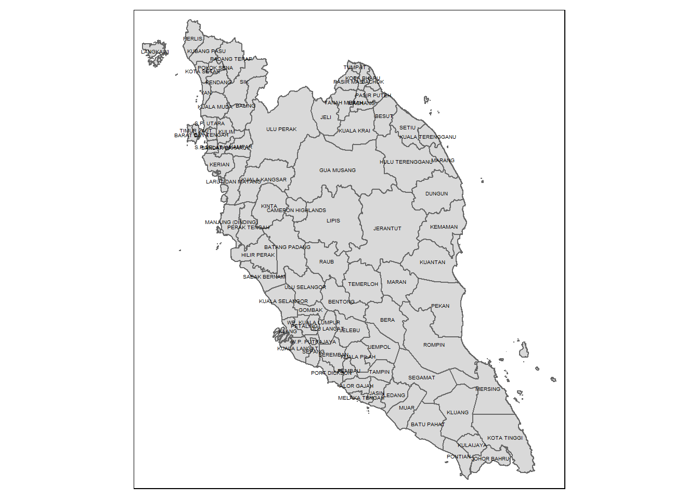
3.2.4.3 Visualizing Crime Distribution
crime_df_mys <- crime_df %>%
filter(year >= 2019 & year <= 2022) %>%
left_join(mys_sf, by = c("state" = "ADM1_EN", "district" = "ADM2_EN")) %>%
dplyr::select(state, district, year, category, type, crimes, Shape_Leng, Shape_Area, geometry)
crime_df_mys <- st_as_sf(crime_df_mys)
crime_df_mysSimple feature collection with 4128 features and 8 fields
Geometry type: MULTIPOLYGON
Dimension: XY
Bounding box: xmin: 184853.1 ymin: 139843.3 xmax: 728635.8 ymax: 744607.2
Projected CRS: Kertau (RSO) / RSO Malaya (m)
# A tibble: 4,128 × 9
# Groups: state, district, year, category [688]
state district year category type crimes Shape_Leng Shape_Area
<chr> <chr> <dbl> <chr> <chr> <dbl> <dbl> <dbl>
1 JOHOR BATU PAHAT 2019 assault causing_injury 41 1.86 0.161
2 JOHOR BATU PAHAT 2019 assault murder 3 1.86 0.161
3 JOHOR BATU PAHAT 2019 assault rape 29 1.86 0.161
4 JOHOR BATU PAHAT 2019 assault robbery_gang_ar… 0 1.86 0.161
5 JOHOR BATU PAHAT 2019 assault robbery_gang_un… 37 1.86 0.161
6 JOHOR BATU PAHAT 2019 assault robbery_solo_ar… 0 1.86 0.161
7 JOHOR BATU PAHAT 2019 assault robbery_solo_un… 29 1.86 0.161
8 JOHOR BATU PAHAT 2019 property break_in 157 1.86 0.161
9 JOHOR BATU PAHAT 2019 property theft_other 127 1.86 0.161
10 JOHOR BATU PAHAT 2019 property theft_vehicle_l… 4 1.86 0.161
# ℹ 4,118 more rows
# ℹ 1 more variable: geometry <MULTIPOLYGON [m]>tmap_mode("plot")tmap mode set to plottingcrime_df_mys_grp <- crime_df_mys %>%
summarize(total_crimes = sum(crimes))`summarise()` has grouped output by 'state', 'district', 'year'. You can
override using the `.groups` argument.choro <- tm_shape(crime_df_mys_grp) +
tm_fill("total_crimes",
style = "pretty",
palette = "Blues",
title = "Crimes") +
tm_layout(main.title = "Distribution of crime in West Malaysia",
main.title.position = "center",
main.title.size = 1.2,
legend.height = 0.45,
legend.width = 0.35,
frame = TRUE) +
tm_borders(alpha = 0.5) +
tm_compass(type="8star", size = 2) +
tm_scale_bar() +
tm_grid(alpha =0.2)
choro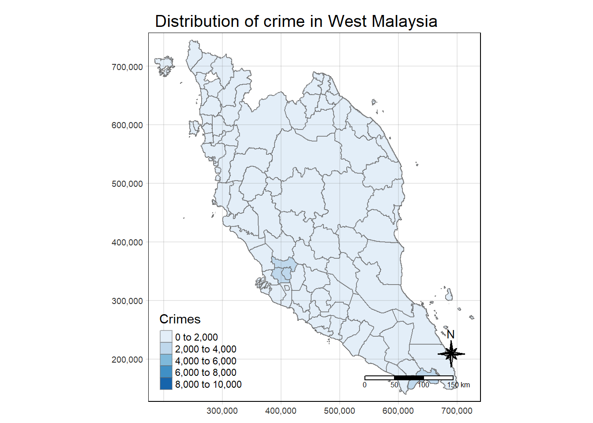
3.2.5 Population (State-District)
3.2.5.1 Check for Mismatch
The year 2019 is missing from the population data set, hence we make the assumption that the population did not experience any drastic increase or decrease, and will thus map population from year 2020 -> 2019.
population_row <- population_df %>%
filter(year == 2020) %>%
mutate(year = 2019)
population_df <- bind_rows(population_df, population_row) %>%
mutate(state_district = paste(state, district, sep = "-"))
unique(population_df$year)[1] 2020 2021 2022 2019state_district_population <- unique(population_df$state_district)
missing_in_sf <- setdiff(state_district_population, state_district_sf)
missing_in_population <- setdiff(state_district_sf, state_district_population)
print("State-District combinations in population_df not found in mys_sf:")[1] "State-District combinations in population_df not found in mys_sf:"print(missing_in_sf) [1] "JOHOR-KULAI" "JOHOR-TANGKAK"
[3] "KELANTAN-KECIL LOJING" "PERAK-BAGAN DATUK"
[5] "PERAK-HULU PERAK" "PERAK-MANJUNG"
[7] "PERAK-MUALLIM" "PERAK-SELAMA"
[9] "PULAU PINANG-SEBERANG PERAI SELATAN" "PULAU PINANG-SEBERANG PERAI TENGAH"
[11] "PULAU PINANG-SEBERANG PERAI UTARA" "TERENGGANU-KUALA NERUS"
[13] "KUALA LUMPUR-W.P. KUALA LUMPUR" "PAHANG-CAMERON HIGHLAND"
[15] "PULAU PINANG-SP SELATAN" "PULAU PINANG-SP TENGAH"
[17] "PULAU PINANG-SP UTARA" print("State-District combinations in mys_sf not found in population_df:")[1] "State-District combinations in mys_sf not found in population_df:"print(missing_in_population)[1] "JOHOR-KULAIJAYA" "JOHOR-LEDANG"
[3] "KUALA LUMPUR-WP. KUALA LUMPUR" "PERAK-ULU PERAK"
[5] "PERAK-MANJUNG (DINDING)" "PULAU PINANG-S.P.SELATAN"
[7] "PULAU PINANG-S.P. TENGAH" "PULAU PINANG-S.P. UTARA" 3.2.5.2 Cleaning
population_df <- population_df %>%
mutate(district = case_when(
state == "JOHOR" & district == "KULAI" ~ "KULAIJAYA",
state == "JOHOR" & district == "TANGKAK" ~ "LEDANG",
state == "KELANTAN" & district == "KECIL LOJING" ~ "GUA MUSANG",
state == "PAHANG" & district == "CAMERON HIGHLAND" ~ "CAMERON HIGHLANDS",
state == "PERAK" & district == "HULU PERAK" ~ "ULU PERAK",
state == "PERAK" & district == "BAGAN DATUK" ~ "HILIR PERAK",
state == "PERAK" & district == "MANJUNG" ~ "MANJUNG (DINDING)",
state == "PERAK" & district == "MUALLIM" ~ "BATANG PADANG",
state == "PERAK" & district == "SELAMA" ~ "LARUT DAN MATANG",
state == "PULAU PINANG" & district == "SEBERANG PERAI SELATAN" ~ "S.P.SELATAN",
state == "PULAU PINANG" & district == "SEBERANG PERAI TENGAH" ~ "S.P. TENGAH",
state == "PULAU PINANG" & district == "SEBERANG PERAI UTARA" ~ "S.P. UTARA",
state == "PULAU PINANG" & district == "SP SELATAN" ~ "S.P.SELATAN",
state == "PULAU PINANG" & district == "SP TENGAH" ~ "S.P. TENGAH",
state == "PULAU PINANG" & district == "SP UTARA" ~ "S.P. UTARA",
state == "KUALA LUMPUR" & district == "W.P. KUALA LUMPUR" ~ "WP. KUALA LUMPUR",
state == "TERENGGANU" & district == "KUALA NERUS" ~ "KUALA TERENGGANU",
TRUE ~ district
)) %>%
group_by(state, district, year) %>%
summarise(population = sum(population))`summarise()` has grouped output by 'state', 'district'. You can override using
the `.groups` argument.population_df# A tibble: 348 × 4
# Groups: state, district [87]
state district year population
<chr> <chr> <dbl> <dbl>
1 JOHOR BATU PAHAT 2019 495.
2 JOHOR BATU PAHAT 2020 495.
3 JOHOR BATU PAHAT 2021 497.
4 JOHOR BATU PAHAT 2022 498.
5 JOHOR JOHOR BAHRU 2019 1711.
6 JOHOR JOHOR BAHRU 2020 1711.
7 JOHOR JOHOR BAHRU 2021 1715.
8 JOHOR JOHOR BAHRU 2022 1724.
9 JOHOR KLUANG 2019 324.
10 JOHOR KLUANG 2020 324.
# ℹ 338 more rowspopulation_df_mys <- population_df %>%
left_join(mys_sf, by = c("state" = "ADM1_EN", "district" = "ADM2_EN")) %>%
dplyr::select(state, district, year, population, geometry)
population_df_mys <- st_as_sf(population_df_mys)
population_df_mysSimple feature collection with 348 features and 4 fields
Geometry type: MULTIPOLYGON
Dimension: XY
Bounding box: xmin: 184853.1 ymin: 139843.3 xmax: 728635.8 ymax: 744607.2
Projected CRS: Kertau (RSO) / RSO Malaya (m)
# A tibble: 348 × 5
# Groups: state, district [87]
state district year population geometry
<chr> <chr> <dbl> <dbl> <MULTIPOLYGON [m]>
1 JOHOR BATU PAHAT 2019 495. (((556714.6 192051.6, 556664.6 192111.5, …
2 JOHOR BATU PAHAT 2020 495. (((556714.6 192051.6, 556664.6 192111.5, …
3 JOHOR BATU PAHAT 2021 497. (((556714.6 192051.6, 556664.6 192111.5, …
4 JOHOR BATU PAHAT 2022 498. (((556714.6 192051.6, 556664.6 192111.5, …
5 JOHOR JOHOR BAHRU 2019 1711. (((664760.7 157664.3, 664668.2 157664.3, …
6 JOHOR JOHOR BAHRU 2020 1711. (((664760.7 157664.3, 664668.2 157664.3, …
7 JOHOR JOHOR BAHRU 2021 1715. (((664760.7 157664.3, 664668.2 157664.3, …
8 JOHOR JOHOR BAHRU 2022 1724. (((664760.7 157664.3, 664668.2 157664.3, …
9 JOHOR KLUANG 2019 324. (((583499.3 195230.8, 581600.3 195991.2, …
10 JOHOR KLUANG 2020 324. (((583499.3 195230.8, 581600.3 195991.2, …
# ℹ 338 more rows3.2.6 Joining
3.2.6.1 Join with Population Data
crime_df_mys <- crime_df %>%
filter(year >= 2019 & year <= 2022) %>%
left_join(population_df, by = c("state", "district", "year")) %>%
mutate(crimes_pc = crimes/population) %>%
dplyr::select(state, district, year, category, type, crimes, crimes_pc, population)3.2.6.2 Create for Pokok Sena District
Unfortunately, the crime dataset we have sourced did not contain any information on the crimes in Pokok Sena District, possibility due to the scarce population in the area. To resolve this, we have taken the mean of the crime per capita in the neighbouring districts in Kedah State to apply to Pokok Sena.
pokok_sena_rows <- crime_df_mys %>%
filter(state == "KEDAH") %>%
group_by(state, year, category, type) %>%
summarise(crimes = mean(crimes),
crimes_pc = mean(crimes_pc),
population = mean(population)) %>%
mutate(district = "POKOK SENA")`summarise()` has grouped output by 'state', 'year', 'category'. You can
override using the `.groups` argument.pokok_sena_rows# A tibble: 48 × 8
# Groups: state, year, category [8]
state year category type crimes crimes_pc population district
<chr> <dbl> <chr> <chr> <dbl> <dbl> <dbl> <chr>
1 KEDAH 2019 assault causing_injury 29.8 0.140 189. POKOK S…
2 KEDAH 2019 assault murder 1.82 0.0129 189. POKOK S…
3 KEDAH 2019 assault rape 13.2 0.0752 189. POKOK S…
4 KEDAH 2019 assault robbery_gang_armed 0.182 0.00155 189. POKOK S…
5 KEDAH 2019 assault robbery_gang_unar… 25.3 0.0992 189. POKOK S…
6 KEDAH 2019 assault robbery_solo_armed 0.182 0.000410 189. POKOK S…
7 KEDAH 2019 assault robbery_solo_unar… 14.7 0.0590 189. POKOK S…
8 KEDAH 2019 property break_in 103. 0.440 189. POKOK S…
9 KEDAH 2019 property theft_other 86.9 0.479 189. POKOK S…
10 KEDAH 2019 property theft_vehicle_lor… 7.09 0.0202 189. POKOK S…
# ℹ 38 more rowscrime_df_mys <- bind_rows(crime_df_mys, pokok_sena_rows)2.3.6.3 Join with District Boundary
crime_df_mys <- crime_df_mys %>%
left_join(mys_sf, by = c("state" = "ADM1_EN", "district" = "ADM2_EN")) %>%
dplyr::select(state, district, year, category, type, crimes, crimes_pc, population, geometry)
crime_df_mys <- st_as_sf(crime_df_mys)
crime_df_mysSimple feature collection with 4176 features and 8 fields
Geometry type: MULTIPOLYGON
Dimension: XY
Bounding box: xmin: 184853.1 ymin: 139843.3 xmax: 728635.8 ymax: 744607.2
Projected CRS: Kertau (RSO) / RSO Malaya (m)
# A tibble: 4,176 × 9
# Groups: state, district, year, category [696]
state district year category type crimes crimes_pc population
<chr> <chr> <dbl> <chr> <chr> <dbl> <dbl> <dbl>
1 JOHOR BATU PAHAT 2019 assault causing_injury 41 0.0828 495.
2 JOHOR BATU PAHAT 2019 assault murder 3 0.00606 495.
3 JOHOR BATU PAHAT 2019 assault rape 29 0.0586 495.
4 JOHOR BATU PAHAT 2019 assault robbery_gang_arm… 0 0 495.
5 JOHOR BATU PAHAT 2019 assault robbery_gang_una… 37 0.0747 495.
6 JOHOR BATU PAHAT 2019 assault robbery_solo_arm… 0 0 495.
7 JOHOR BATU PAHAT 2019 assault robbery_solo_una… 29 0.0586 495.
8 JOHOR BATU PAHAT 2019 property break_in 157 0.317 495.
9 JOHOR BATU PAHAT 2019 property theft_other 127 0.256 495.
10 JOHOR BATU PAHAT 2019 property theft_vehicle_lo… 4 0.00808 495.
# ℹ 4,166 more rows
# ℹ 1 more variable: geometry <MULTIPOLYGON [m]>3.2.7 Visualizing the distribution of crime
crime_df_mys_grp <- crime_df_mys %>%
group_by(state, district) %>%
summarize(total_crimes_pc = sum(crimes_pc)/4)`summarise()` has grouped output by 'state'. You can override using the
`.groups` argument.tmap_mode("plot")tmap mode set to plottingchoro <- tm_shape(crime_df_mys_grp) +
tm_fill("total_crimes_pc",
n = 5,
style = "equal",
palette = "Blues",
title = "Crime per Capita in West Malaysia") +
tm_layout(main.title = "Crime per Capita Distribution",
main.title.position = "center",
main.title.size = 1.2,
legend.height = 0.45,
legend.width = 0.35,
frame = TRUE) +
tm_borders(alpha = 0.5) +
tm_compass(type="8star", size = 2, position = c("right", "top")) +
tm_grid(alpha =0.2)
choro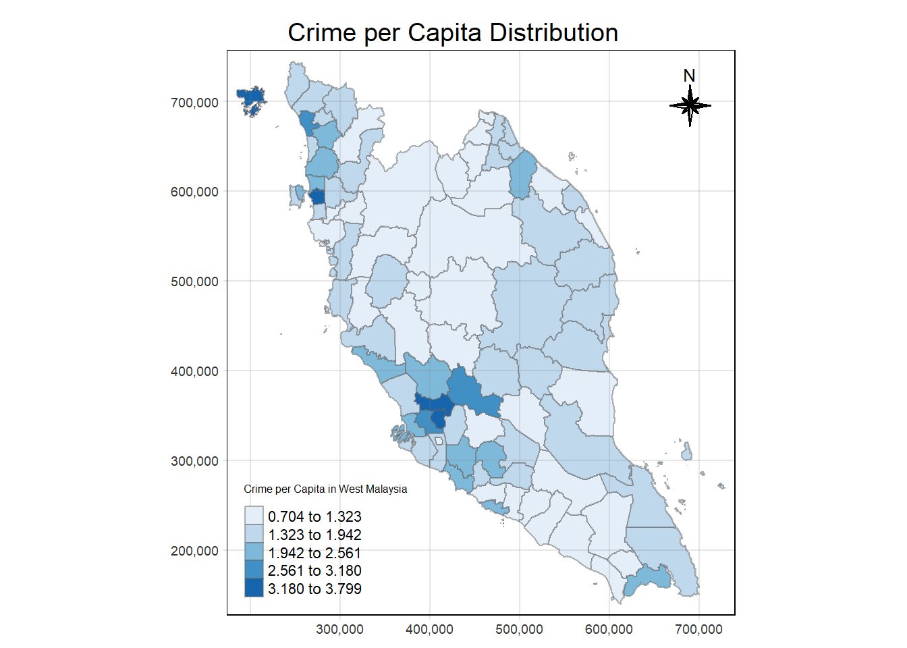
3.4 Global Measures of Spatial Autocorrelation
3.4.1 Computing Contiguity Spatial Weights
We now generate the neighbours list.
mys_nb_q <- st_contiguity(crime_df_mys_grp, queen=TRUE)Warning in spdep::poly2nb(geometry, queen = queen, ...): some observations have no neighbours;
if this seems unexpected, try increasing the snap argument.Warning in spdep::poly2nb(geometry, queen = queen, ...): neighbour object has 3 sub-graphs;
if this sub-graph count seems unexpected, try increasing the snap argument.# Langkawi has no immediate neighbours, hence its neighbour has to be manually added.
mys_nb_q[[17]] <- as.integer(c(18))
mys_nb_q[[18]] <- as.integer(sort(unique(c(mys_nb_q[[18]], 17))))
mys_wm_rs <- st_weights(mys_nb_q, style="W")
wm_q <- crime_df_mys_grp %>%
ungroup() %>%
mutate(nb = mys_nb_q,
wt = mys_wm_rs,
.before = 1) 3.4.2 Moran’s I test
The code chunk below performs Moran’s I statistical testing using moran.test() of spdep. The primary goal of the test is to determine whether the spatial autocorrelation is positive, negative or non-existent.
Null Hypothesis \(H_0:I\leq E[I]\). This suggests that there is either no spatial autocorrelation (\(I=E[I]\)). or negative spatial autocorrelation (\(I<E[I]\)).
Alternative Hypothesis \(H_0:I> E[I]\). This indicates the presence of positive spatial autocorrelation.
moranI <- global_moran(wm_q$total_crimes_pc,
wm_q$nb,
wm_q$wt)global_moran_test(wm_q$total_crimes_pc,
wm_q$nb,
wm_q$wt,
alternative = "greater")
Moran I test under randomisation
data: x
weights: listw
Moran I statistic standard deviate = 3.9166, p-value = 4.491e-05
alternative hypothesis: greater
sample estimates:
Moran I statistic Expectation Variance
0.275786031 -0.011627907 0.005385229 Based on the Moran’s I test, we can conclude that there is evidence of significant positive spatial autocorrelation in the crime data. This suggests that the distribution of crime in Malaysia is not random and that there are clusters of high and low crime rates.
The Moran’s I statistic is positive (0.271500147), suggesting a positive spatial autocorrelation in the crime data. This means that areas with similar crime rates tend to be located near each other.
The standard deviate of 3.8061 indicates the significance of the Moran’s I statistic. A higher standard deviate suggests a stronger spatial pattern.
The p-value of 7.058e-05 is less than the significance level of 0.05, indicating that the observed spatial pattern is statistically significant. This means that it is unlikely to have occurred by chance.
3.4.2.1 Performing Global Moran’s I permutation test
set.seed(123)
gmoranMC <- global_moran_perm(wm_q$total_crimes_pc,
wm_q$nb,
wm_q$wt,
nsim = 999)
gmoranMC
Monte-Carlo simulation of Moran I
data: x
weights: listw
number of simulations + 1: 1000
statistic = 0.27579, observed rank = 999, p-value = 0.002
alternative hypothesis: two.sided- We can observe that the Moran’s I statistic is 0.2715 with a p-value < 2.2e-16, which is similar to our previous result using
moran.test(). It confirms that our result is stable.
3.4.2.2 Visualising Monte Carlo Moran’s I
hist(gmoranMC$res, main="Histogram of Simulation Results", xlab="Monte-Carlo Results", ylab="Frequency")
abline(v = gmoranMC$statistic, col = "red")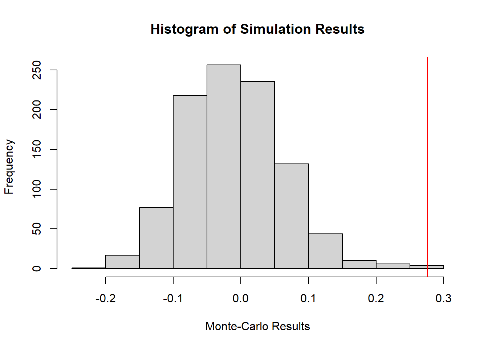
3.4.3 Geary’s C test
The code chunk below performs Global Geary’s C test for spatial autocorrelation by using geary.test() of spdep.
global_c_test(wm_q$total_crimes_pc,
wm_q$nb,
wm_q$wt,
alternative = "greater")
Geary C test under randomisation
data: x
weights: listw
Geary C statistic standard deviate = 4.1574, p-value = 1.609e-05
alternative hypothesis: Expectation greater than statistic
sample estimates:
Geary C statistic Expectation Variance
0.645478034 1.000000000 0.007271778 The calculated Geary’s C statistic of 0.649379732 deviates from the expected value of 1, indicating a potential spatial pattern in the data. The associated p-value of 2.155e-05 is statistically significant at the 0.05 level, further supporting the conclusion that the observed spatial pattern is unlikely to be due to random chance. Therefore, we reject the null hypothesis of no spatial autocorrelation.
3.4.3.1 Monte Carlo Geary’s C
set.seed(123)
bperm <- global_c_perm(wm_q$total_crimes_pc,
wm_q$nb,
wm_q$wt,
nsim = 999)
bperm
Monte-Carlo simulation of Geary C
data: x
weights: listw
number of simulations + 1: 1000
statistic = 0.64548, observed rank = 1, p-value = 0.001
alternative hypothesis: greaterIt can be seen that the results are similar to the previous output of the code chunk. Hence our result is statistically significant.
3.4.3.2 Visualising the Monte Carlo Geary’s C
hist(bperm$res,
freq=TRUE, breaks=20,
xlab="Simulated Geary c")
abline(v=1, col="red") 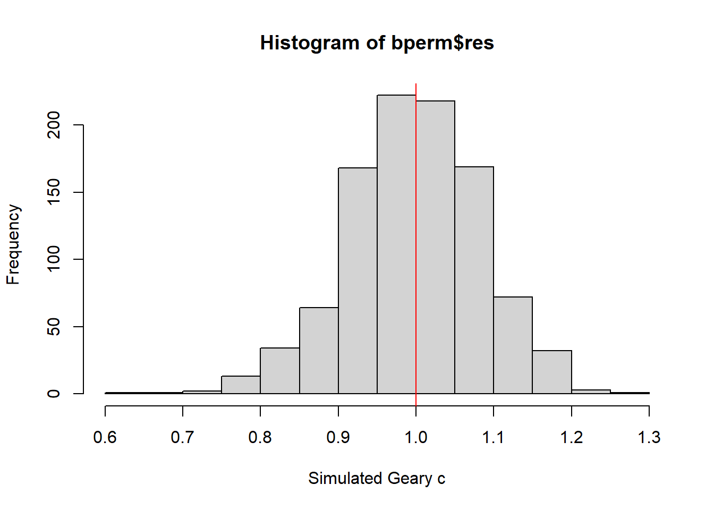
3.5 Local Measures of Spatial Autocorrelation
3.5.1 Computing Local Moran’s I
To compute local Moran’s I, the local_moran() function of sfdep will be used. It computes Ii values, given a set of zi values and a listw object providing neighbour weighting information for the polygon associated with the zi values.
lisa <- wm_q %>%
mutate(local_moran = local_moran(
total_crimes_pc, nb, wt, nsim = 99),
.before = 1) %>%
unnest(local_moran)
lisaSimple feature collection with 87 features and 17 fields
Geometry type: MULTIPOLYGON
Dimension: XY
Bounding box: xmin: 184853.1 ymin: 139843.3 xmax: 728635.8 ymax: 744607.2
Projected CRS: Kertau (RSO) / RSO Malaya (m)
# A tibble: 87 × 18
ii eii var_ii z_ii p_ii p_ii_sim p_folded_sim skewness
<dbl> <dbl> <dbl> <dbl> <dbl> <dbl> <dbl> <dbl>
1 0.931 0.0733 0.224 1.81 0.0699 0.02 0.01 -0.776
2 -0.639 0.00450 0.437 -0.974 0.330 0.24 0.12 0.978
3 0.319 -0.0136 0.0529 1.44 0.148 0.04 0.02 -1.11
4 0.0148 -0.00278 0.00580 0.230 0.818 0.96 0.48 -0.785
5 0.0716 -0.0366 0.0961 0.349 0.727 0.92 0.46 -0.596
6 0.779 -0.0610 0.334 1.46 0.146 0.1 0.05 -0.625
7 0.163 0.0101 0.0281 0.912 0.362 0.34 0.17 -0.331
8 1.21 -0.0341 0.646 1.55 0.121 0.04 0.02 -0.858
9 0.260 0.0210 0.249 0.479 0.632 0.76 0.38 -0.603
10 0.352 -0.0139 0.0349 1.96 0.0502 0.02 0.01 -0.764
# ℹ 77 more rows
# ℹ 10 more variables: kurtosis <dbl>, mean <fct>, median <fct>, pysal <fct>,
# nb <nb>, wt <list>, state <chr>, district <chr>, total_crimes_pc <dbl>,
# geometry <MULTIPOLYGON [m]>3.5.1.1 Visualising Local Moran’s I
tm_shape(lisa)+
tm_fill("ii",
palette = c("#b7dce9","#e1ecbb","#f5f3a6",
"#f8d887","#ec9a64","#d21b1c"),
title = "Local Moran's I",
midpoint = NA,
legend.hist = TRUE,
legend.is.portrait = TRUE,
legend.hist.z = 0.1) +
tm_borders(col = "black", alpha = 0.6)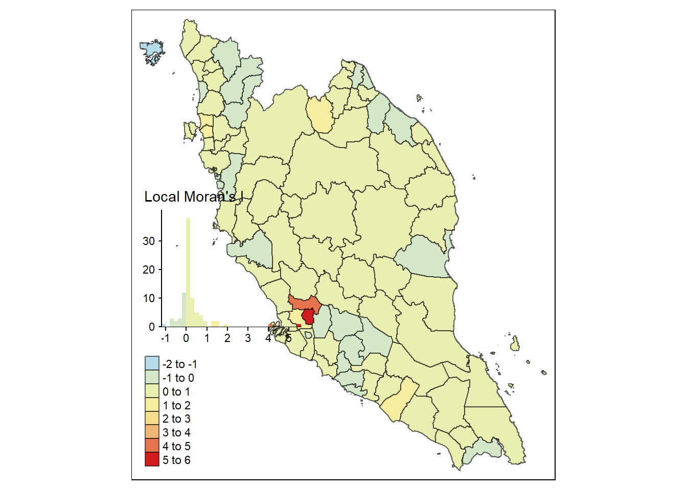
3.5.1.2 Visualising Local Moran’s I p-value
tm_shape(lisa)+
tm_fill("p_ii_sim",
palette = c("#b7dce9","#c9e3d2","#f5f3a6","#ec9a64","#d21b1c"),
title = "p-value",
midpoint = NA,
legend.hist = TRUE,
legend.is.portrait = TRUE,
legend.hist.z = 0.1) +
tm_borders(col = "black", alpha = 0.6)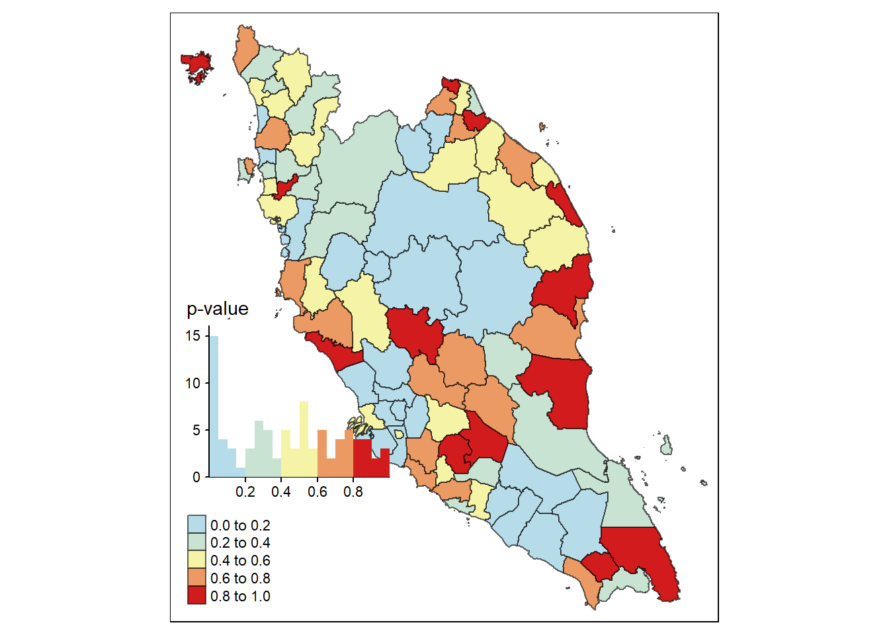
3.5.1.3 Visualising Statistically Significant Local Spatial Autocorrelation Map
From the p-value map above, it appears that not every district exhibits a statistically significant Local Moran’s value. We will thus filter out to focus our analysis will focus solely on districts with statistically significant values.
lisa_sig <- lisa %>%
filter(p_ii_sim < 0.05)
tm_shape(lisa)+
tm_polygons() +
tm_borders(col = "black", alpha = 0.6)+
tm_shape(lisa_sig)+
tm_fill("ii",
palette = c("#b7dce9","#e1ecbb","#f5f3a6",
"#f8d887","#ec9a64","#d21b1c"),
title = "Local Moran's I (p < 0.05)",
midpoint = NA,
legend.hist = TRUE,
legend.is.portrait = TRUE,
legend.hist.z = 0.1) +
tm_borders(col = "black", alpha = 0.6)Warning: One tm layer group has duplicated layer types, which are omitted. To
draw multiple layers of the same type, use multiple layer groups (i.e. specify
tm_shape prior to each of them).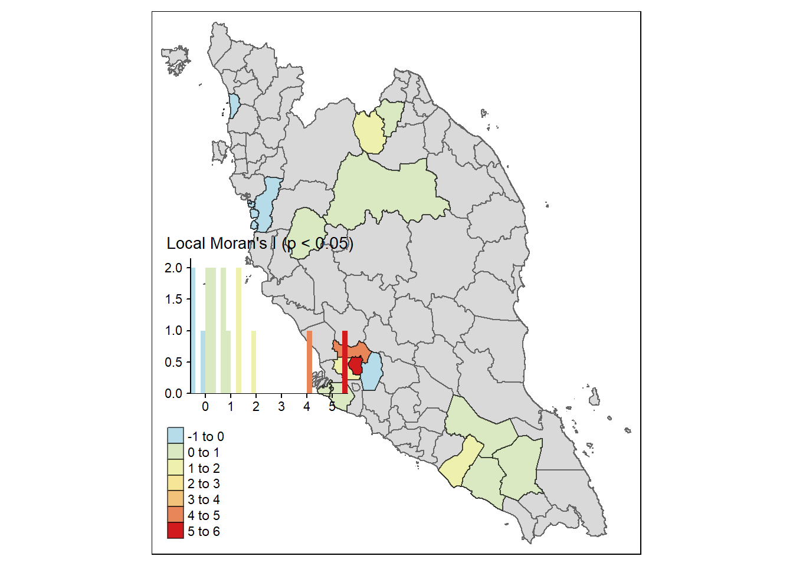
3.5.2 LISA Classification
Specific to our study, we may infer LISA classifications as below.
High-Low Outliers: districts with a high value of crime per capita, surrounded by districts with low values of crime per capita
Low-High Outliers: districts with a low value of crime per capita, surrounded by neighbouring districts with high values of crime per capita
High-High Clusters: districts with a high value of crime per capita, surrounded by neighbouring districts with high values of crime per capita
Low-Low Clusters: districts with a low value of crime per capita, surrounded by neighbouring districts with low values of crime per capitatmap_mode("plot")tmap mode set to plottingstudy_area_lisa <- tm_shape(lisa)+
tm_polygons() +
tm_borders(col = "black", alpha = 0.6)+
tm_shape(lisa_sig)+
tm_fill("mean",
palette = c("#b7dce9","#ec9a64","#e1ecbb", "#d21b1c"),
title = "LISA class",
midpoint = NA,
legend.hist = TRUE,
legend.is.portrait = TRUE,
legend.hist.z = 0.1) +
tm_borders(col = "black", alpha = 0.6)
study_area_lisaWarning: One tm layer group has duplicated layer types, which are omitted. To
draw multiple layers of the same type, use multiple layer groups (i.e. specify
tm_shape prior to each of them).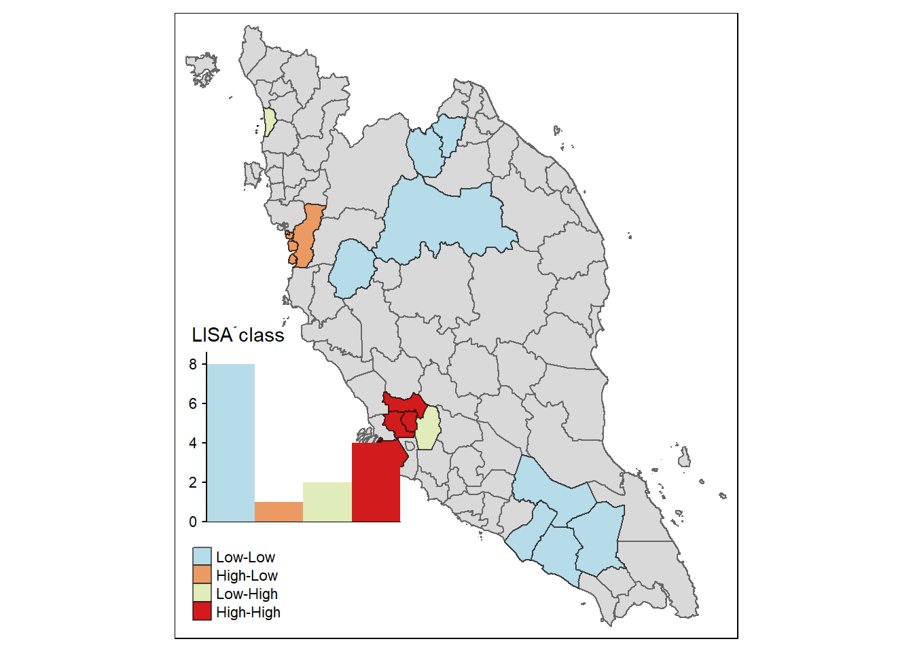
3.6 Hot and Cold Spots Analysis (HCSA)
The Gi and Gi* measures are typically reported as a z-score where high values indicate a high-high cluster, and negative z-scores indicate a low-low cluster. There are no high-low and low-high classifications like the local Moran.
wm_idw <- crime_df_mys_grp %>%
ungroup() %>%
mutate(nb = include_self(st_contiguity(geometry)),
wt = st_inverse_distance(nb, geometry,
scale = 1,
alpha = 1),
.before = 1)! Polygon provided. Using point on surface.Warning: There were 2 warnings in `stopifnot()`.
The first warning was:
ℹ In argument: `nb = include_self(st_contiguity(geometry))`.
Caused by warning in `spdep::poly2nb()`:
! some observations have no neighbours;
if this seems unexpected, try increasing the snap argument.
ℹ Run `dplyr::last_dplyr_warnings()` to see the 1 remaining warning.Next, we will calculate local using local_gstart_perm() function.
HCSA <- wm_idw %>%
mutate(local_Gi_star = local_gstar_perm(
total_crimes_pc, nb, wt, nsim = 99),
.before = 1) %>%
unnest(local_Gi_star)tmap_mode("plot") tmap mode set to plottingtm_shape(HCSA)+
tm_fill("gi_star",
palette = c("#57bfc0", "#7977f3","#f8d673","#f8b675","#f67774"),
title = "Gi*",
midpoint = 0) +
tm_borders(col = "black", alpha = 0.6)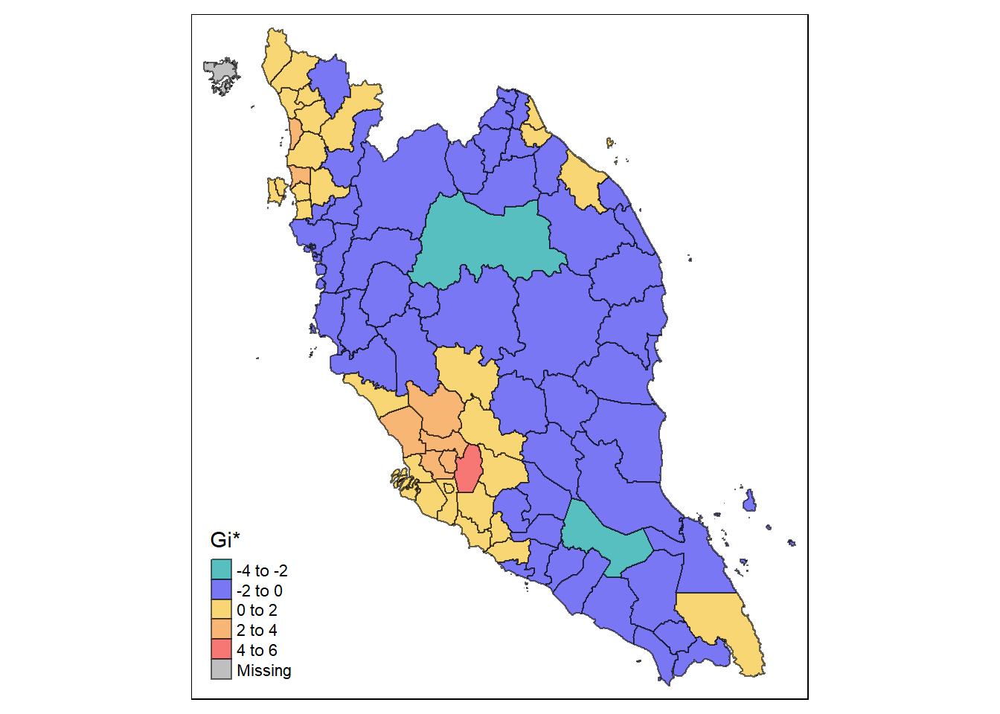
Similar to what we did for the LISA map, we choose to narrow our focus onto districts with statistically significant Gi* values.
HCSA_sig <- HCSA %>%
filter(p_sim < 0.05)
tmap_mode("plot")tmap mode set to plottingtm_shape(HCSA) +
tm_polygons() +
tm_shape(HCSA_sig)+
tm_fill("gi_star",
palette = c("#57bfc0", "#7977f3","#f8d673","#f8b675","#f67774"),
title = "Gi*",
midpoint = 0,
legend.hist = TRUE,
legend.is.portrait = TRUE,
legend.hist.z = 0.1) +
tm_borders(col = "black", alpha = 0.6)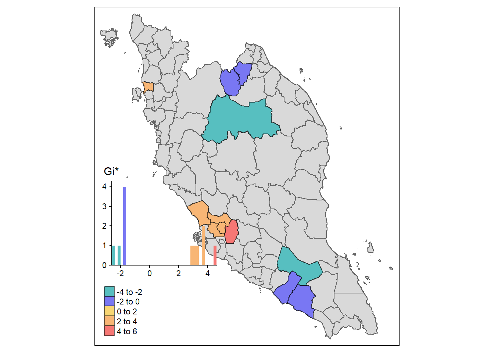
set.seed(123)
three_hotspots <- (head((HCSA_sig[HCSA_sig$gi_star > 2,]), 3)$district)
three_coldspots <- (head((HCSA_sig[HCSA_sig$gi_star > -2,]), 3)$district)
three_hotspots[1] "WP. KUALA LUMPUR" "S.P. UTARA" "GOMBAK" three_coldspots[1] "BATU PAHAT" "MUAR" "JELI" 4. Conclusion
It was exciting to apply my research skills to a real-world data analysis project. By diving into the world of data visualization, I had fun with attempts of transforming complex information into compelling stories. This experience has ignited my enthusiasm for data-driven decision-making, and I look forward to further continue working on this exercise in the project.